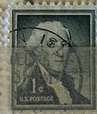
| SOURCE | TITLE| IMAGE MATCH | click to source page |
| HipStamp | 1054 1 cent 1960 Washington, Coil used F-VF | United States, General Issue Stamp / HipStamp | 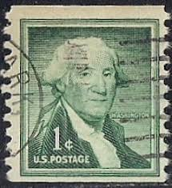 |
| eBay | RARE /UNUSED Vintage George Washington One 1 Cent Stamp US Postage. | eBay | 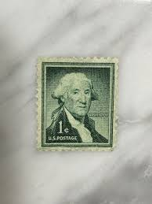 |
| eBay | RARE / Vintage George Washington One 1 Cent Stamp US Postage. Good Condition | eBay | 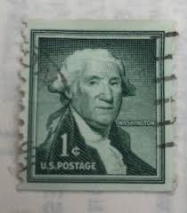 |
| eBay | 1954 George Washington 1 Cent Green Stamp New Cancelled to Order CTO | eBay | 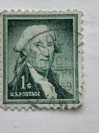 |
| Poshmark | Other | Collection Of Vintage George Washington Stamps | Poshmark | 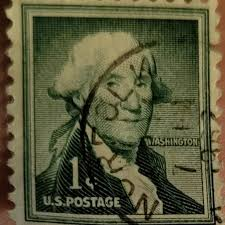 |
| eBay | 1954 George Washington 1 Cent Green Stamp New Cancelled to Order CTO | eBay | 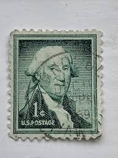 |
| HipStamp | US #1031 1c George Washington | United States, General Issue Stamp / HipStamp | 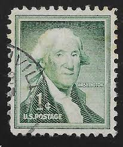 |
| eBay | Very Good (VG) Politicians United States Stamps for sale | eBay | 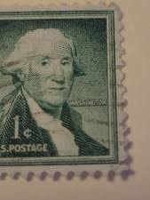 |
| HipStamp | 1031 1 cent 1956 Washington, used VF | United States, General Issue Stamp / HipStamp | 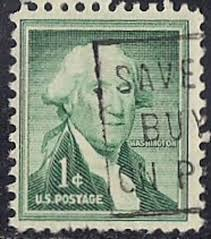 |
| eBay | 1 Cent Postage Stamp In Used Us Stamps (1901-Now) for sale | eBay | 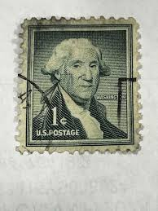 |
| eBay | 4 Cent Seasonal, Christmas Multi-Color United States Stamps for sale | eBay | 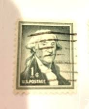 |
| HipStamp | US 1054 George Washington 1c coil single MNH 1968 | United States, General Issue Stamp / HipStamp | 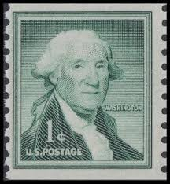 |
| Encyclopaedia Philatelica | Letter W - Encyclopaedia Philatelica | 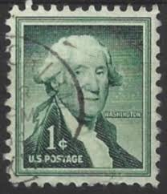 |
| eBay | George Washington Rare 1 Cent Green US Stamp 2 piece double Straight Edges | eBay | 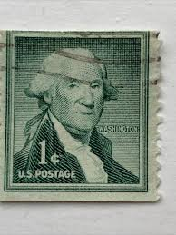 |
| eBay | 1 Cent Postage Stamp In Used Us Stamps (1901-Now) for sale | eBay | 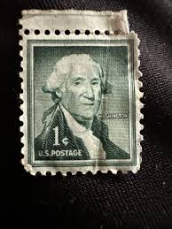 |
| Dreamstime.com | USA - CIRCA 1954: a Stamp Printed in USA Shows 1st President of the United States George Washington, Circ Editorial Image - Image of hobby, philatelic: 185865300 | 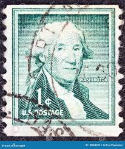 |
| philatelyclub.com | Scott 1031 1 Cent George Washington United States Postage Stamp | 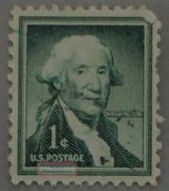 |
| HipStamp | 1031b Used DRY Print George Washington | United States, General Issue Stamp / HipStamp | 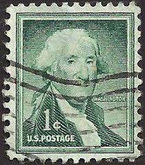 |
| The Society of Authors | 1 Cent George Washington Stamp Value | 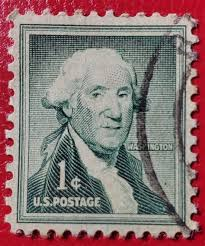 |
| HipStamp | 1031 1 cent 1956 Washington, used VF | United States, General Issue Stamp / HipStamp | 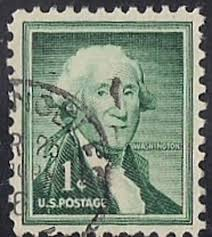 |
| Dreamstime.com | Vintage US Postage Stamp of President Washington Editorial Image - Image of correspondence, cents: 85362625 | 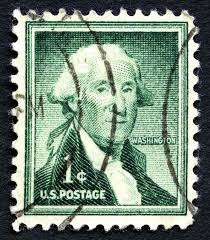 |
| eBay | PF US Postage Stamps for sale | eBay | 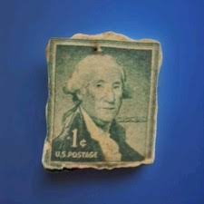 |
| eBay | Ship Cancel 1 Cent Green United States Stamps for sale | eBay | 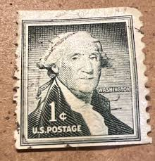 |
| Mercari | Rare Washington stamp USPS | Mercari | 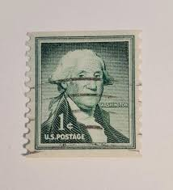 |
| Shutterstock | 15+ Thousand Historic Stamps Of America Royalty-Free Images, Stock Photos & Pictures | Shutterstock | 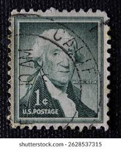 |
| Rare Vintage George Washington 1 Cent Stamp, Green United States Postage 1954 | 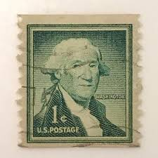 | |
| eBay | 1 Cent Green Used US Postage Stamps for sale | eBay | 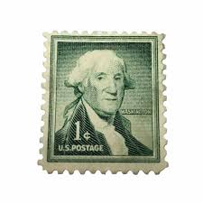 |
| Faith Community Nurse Network | Vintage stamps - fcnntc.org | 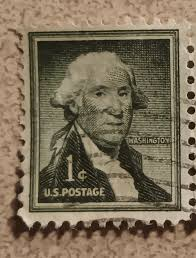 |
| eBay | RAREVintage George Washington One 1 Cent Stamp US Postage VERY FINE Condition | eBay Australia | 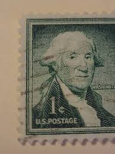 |
| CILCUSAIRCUS 28460 30ទ 5c כענעט STATES ע STATES 5c 5． UXTREDSTACESUNEDSEA STATES STATES 5 5c UNIZEDSTATES.UNIEDSPARES מפעעאע STATE UNITED 5 5 פעדנאע STATES STATE | 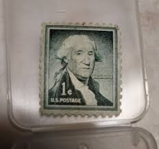 | |
| PicClick UK | GEORGE WASHINGTON RARE 2 Cent U.S. Postage Stamp Used £40.00 - PicClick UK | 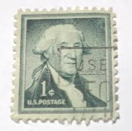 |
| Alamy | First president of the united states of america hi-res stock photography and images - Alamy | 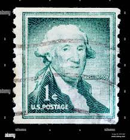 |
| eBay | Precancel 1 Cent Unused US Stamps (1901-1940) for sale | eBay | 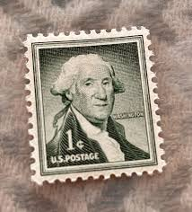 |
| Todocolección | cromo panini donruss elite 2021 2022 21 22 prem - Buy Collectible football stickers on todocoleccion | 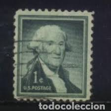 |
| Dreamstime.com | 1c Postage Stock Photos - Free & Royalty-Free Stock Photos from Dreamstime | 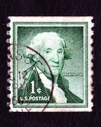 |
| The Itty Bitty Stamp Company | Scott # 1054 Used Line Pair – The Itty Bitty Stamp Company | 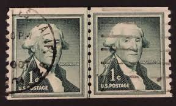 |
| PicClick UK | GEORGE WASHINGTON 1C Stamp One Cent USA Postage stamp Green £32.98 - PicClick UK | 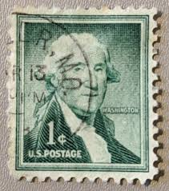 |
| ebid.net | US Stamp #1284b used: 1967 6c Franklin D Roosevelt - booklet bottom left corner on eBid United States | 141392882 | 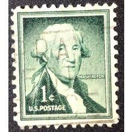 |
| Federal University of Agriculture, Abeokuta (FUNAAB) | GEORGE WASHINGTON 1CENT STAMP GREEN | 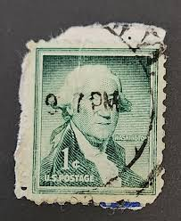 |
| Dreamstime.com | United States Vs Serbia VNL Quarter Final Match in Ankara, Turkiye Editorial Image - Image of player, girl: 278442510 | 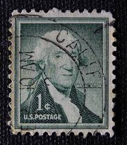 |
| Dreamstime.com | 184 Old Vintage Postage Stamp Usa Washington President Stock Photos - Free & Royalty-Free Stock Photos from Dreamstime | 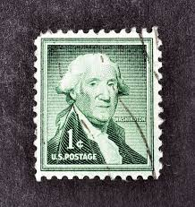 |
| What is that color and number on the back of the stamp? | 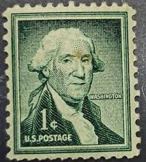 | |
| Dreamstime.com | Valverde CT, Italy - January 15, 2023: a Old Postage Stamp from USA Showing a Drawing of George Washington Editorial Stock Photo - Image of appostamento, affrancatura: 267247068 | 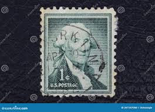 |
| Dreamstime.com | Vintage Map of Washington County in Arkansas, USA. Stock Vector - Illustration of state, arkansas: 283054158 | 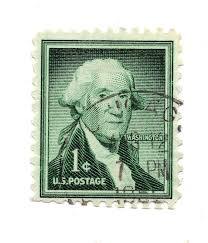 |
| iStock | George Washington Postal Stamp Stock Photo - Download Image Now - 1950-1959, Black Background, Founding Fathers of the United States - iStock | 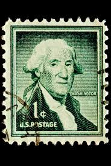 |
| Is this old stamp worth anything? | 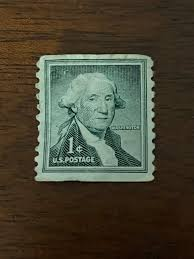 | |
| Pngtree | 1,288+ President Washington Photos, Pictures And Background Images For Free Download - Pngtree | 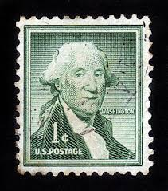 |
| Todocolección | u.s. postage, 1 cent, washington, año 1935 - Buy Antique stamps of United States on todocoleccion | 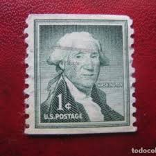 |
| eBay | RARE 1954 1 cent George Washington United States Postage Stamp Cancelled Used | eBay | 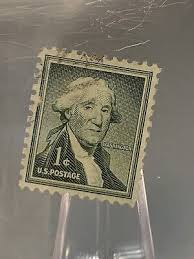 |
| Shafer Print Shop | Limited Edition George Washington Poster - Postage Stamp Art - 13x19" — Shafer Print Shop | |
| Etsy | 50 Green George Washington Stamps - Stamps by Color Projects - 1955 USA - Etsy New Zealand | |
| eBay | 2 Rare George Washington Green 1 Cent US Postage Stamp | eBay | |
| Shutterstock | 4+ Thousand George Washington Portrait Royalty-Free Images, Stock Photos & Pictures | Shutterstock | |
| Alamy | Washington stamp george president hi-res stock photography and images - Alamy | |
| eBay | RAREVintage George Washington One 1 Cent Stamp US Postage VERY FINE Condition | eBay | |
| iStock | Vintage Washington Five Cent Stamp Stock Photo - Download Image Now - Antique, Blue, Cancellation - iStock | |
| eBay | 4 cents Lincoln stamp & 1 cents Washington Coil stamp- U.S postal stamp | eBay | |
| eBay | Rare George Washington 1 Cent Stamp U.S. Postage Green Vintage | eBay | |
| Shutterstock | 1+ Thousand George Washington Stamp Royalty-Free Images, Stock Photos & Pictures | Shutterstock |